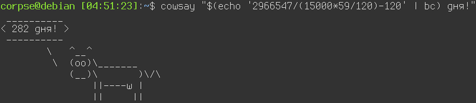

О деградации кино и коротких рассказах

Не знаю, как у вас, а у меня довольно часто бывает такое состояние, когда хочется выпасть из окружающего тебя мира хотя бы на 10 минут, очутиться в другой реальности, забыть про дела и работу - одним словом, сбежать от всего, что окружает. И что удивительно, художественная литература в этом отношении лично на меня в последнее время оказывает куда больший эффект, нежели видеоряд. Не знаю, почему так. Может быть мы уже избалованы спецэффектами после разнообразных "Аватаров" и "Властелинов колец". Может быть за последнее время слишком часто за спецэффектами стали прятать отсутствие смысла, банальность сюжета или логические несостыковки. А возможно, моя фантазия устала от бездействия и хочет сама создавать какие-то образы. Одним словом, какое кино или сериал я ни начинаю в последнее время смотреть, мне не нравится. И то, что идёт в прокате в кино мне тоже не нравится. Пересматривать уже просмотренное я не люблю так же как и перечитывать уже прочитанное, разве что уж совсем что-то напрочь забытое.
Теги: кино, книги, подкасты, мысли-вслух
Очистка старой почты в gmail
Раз в пару лет я провожу генеральную уборку в своём почтовом ящике. Так как пользуюсь я gmail аккаунтом, то веб-интерфейс для этого, как выяснилось уже давно, далеко не самое удобное решение. Конечно, у меня уже прописан миллион правил для писем, на основании которых письма сортируются по папкам, но и этого зачастую не хватает. Появляются новые письма, которые не попадают под уже существующие метки и за год таких писем может накопиться скажем, пара миллионов. Более того, есть письма, которые мне нужны в определённой папке какое-то время, например, месяц или два и которые затем можно смело удалить. Так вот, в рамках самого gmail, насколько я понимаю, нет возможности настроить правило с соответствующим функционалом, но есть в принципе несколько методов борьбы с данной проблемой.
Теги: админское
Об информационной безопасности и сроке годности

Прогресс
Скорость прогресса непостоянна. Если взять скажем, разницу в образе жизни людей 13го века и образе жизни людей 17го века, то разница конечно же будет, но она ни в какое сравнение не идёт между разницей между 17-м и 19-м веками. И даже эта разница меркнет по сравнению с тем разрывом в прогрессе, который произошёл между 19м веком и настоящим временем. Развитие нелинейно, оно экспоненциально. Чем больше у нас знаний и возможности их применения, тем больше это даёт новых и новых знаний и возможностей их применения.
Наша среда изменяется, появляются новые вещи, новые понятия и новые возможности, о которых и не мечтали фантасты в 19-м веке. Жюль Верн ничего не написал про появление в будущем интернета, но он был бы наверное в шоке, если бы узнал, что сейчас мы можем достать из кармана небольшой прямоугольничек и получить доступ практически ко всем знаниям и всему опыту, накопленному человечеством за всё время. И он скорее всего впал бы в депрессию, если бы узнал, что бОльшая часть человечества пользуется этой возможностью преимущественно для того, чтобы лицезреть изображения котиков или выкладывать изображения себя на всеобщее обозрение.
Теги: мысли-вслух
Рубрика "в гостях у калькулятора"

Меня тут в половину пятого ночи посетило любопытство - а сколько знаков и слов в среднем занимает пост на блоге? Я посчитал. Предыдущий пост - это примерно 1600 слов и 18 тысяч знаков. Большой пост - это чуть менее 3000 слов и 30 с лишним тысяч знаков. То есть, сев вечером с желанием что-то написать, мне нужно теперь быть уверенным, что я действительно хочу примерно 20 - 25 тысяч раз нажать на разные кнопочки, пока не лягу спать... Двадцать пять тысяч раз, Карл! И это не учитывая того, что постоянно что-то меняется, добавляется, убирается и исправляется. Да, в попугаях кнопочках посты длиннее. Интересно, а сколько же раз мы нажимаем на бедные кнопочки, скажем, за месяц? За год? Лет за пять?
Теги: мысли-вслух
Скрипт для обновления DNS записей CloudFlare

Пост называется "опять не спится" или "как бесплатно завернуть домен второго уровня на ваш домашний динамический IP адрес". Для чего это вам может быть нужно? Вариантов много. Например, это возможность впоследствии поднять дома какие-нибудь сервисы. Например, создать собственное облако для хранения и расшаривания файлов и смотреть в пути фильмы, лежащие на домашнем жёстком диске или развернуть личный блог, сайт-визитку, сервис умного дома, да хоть устроить станцию онлайн вещания - всё ограничивается вашей фантазией, вариантов использования может найтись масса, когда существует возможность.
Теги: shell, automatization, networking, админское
Про женскую внешность и шанс на знакомство

Под предыдущим постом развернулась дискуссия в контакте на тему внешности и шансов девушки познакомиться. Приведу ниже два комментария, оставленных разными людьми (с сохранением оригинальной пунктуации и орфографии):
Теги: мысли-вслух
Про женскую красоту и дорогую древесину

Моя жена периодически смотрит различные видео, посвящённые маникюру, косметике и прочему девочковому стаффу. Особо не прислушиваюсь, но так или иначе всё это приходится слышать. Иногда это провоцирует появление различных сугубо мужских мыслей на эту тему, которые я и выложу тут. Скажу сразу - да, наверное я чего-то не понимаю (и не против, чтобы мне что-то объяснили), но большинство подобных описанным ниже ситуаций происходит по той причине, что женщинам просто хочется почувствовать себя особенными. Так же я прекрасно понимаю, что мы симметрично можем глупо выглядеть в глазах женщин со своими увлечениями электроникой, машинами и компьютерными играми.
Теги: мысли-вслух
Упороборос или самоперезаписываемые значения в shell скриптах

Периодически, когда мне нужно написать какой-то скрипт на шелле, я сталкиваюсь с типовыми задачами, которые можно решить быстро, просто и в лоб, а можно написать некоторое количество кода, что займёт больше времени, но при этом позволит использовать эту наработку в будущем. Одним словом, на шелле с этим всё обстоит точно так же, как и в других языках. Хотя наверное сочетание слов "библиотека на шелле" звучит достаточно дико и непривычно. Когда -то я уже писал о библиотеке логирования на шелле, которую я сделал много лет назад и достаточно часто ей пользуюсь, с тех пор не было нужды что-то в ней менять.
Вчера я столкнулся с задачей, для которой целая библиотека на гитхабе - это явный перебор, но метод, который можно включать в различные скрипты мне бы совсем не помешал. И вот чем прекрасен собственный блог - это самое подходящее место для того, чтобы оставить заметочку с небольшим куском кода, который потом при необходимости оттуда можно быстро скопировать. Как это нередко бывает при попытке написать что-то на шелле, сам код оказался куда проще, компактнее и универсальнее, чем изначально казалось, должен был быть.
Теги: shell
Про фильтры и информационный шум

Мой хороший друг написал статью о твиттере, социальных сетях и почте. В статье помимо прочего было замечено следующее:
Соцсети, например, создают очень сильный информационный шум. И если не уметь его фильтровать и отсеивать, то пользы не будет никакой. Будут усталые глаза, затекшая шея и ощущение, что ты сделал что-то полезное (на самом деле нет). Самый эффективный и простой инструмент доставки полезной информации — это электронные письма. И пока ничего более удобного не придумали.
Теги: мысли-вслух
Про внезапный переезд на GitHub Pages
Сегодня ночью случилось сразу несколько событий. Яндекс мигрировал мой домен в Яндекс.Коннект, у меня дома отвалился интернет, а затем выключили и электропитание. Нередкий случай проявления заботы со стороны нашего ТСЖ - нечего ночами сидеть в сети, ложись спать давай, родной. Вот, мы и свет уже тебе погасили. Логичным продолжением было бы отключение воды, отопления, газа и, чего уж там, сразу воздуха, но этого, что меня радует, не последовало.
Через какое-то время мой хороший друг написал в телеграм - мол, блог твой недоступен, на что ласково был обозван "мониторингом мониторинговичем" и примерно в этот же миг снизошло на меня озарение свыше - включили свет и увидел я мир вокруг. И понял я, что это хорошо. Интернет тоже не заставил себя ждать, а вот блог так и остался недоступен. Раньше я бы плюнул на всё и лёг спать, но с мыслью о 52х постах, которые кто-то читает, кто-то даже комментирует, а кому-то, о чудо, и вовсе нравится, я уже уснуть спокойно не мог. Надо было чинить.